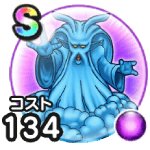

くもの大王
13章5話〜14章4話こころ最大コスト+4じゅもんダメージ+7%ドルマ属性じゅもんダメージ+7%バギ属性耐性+7%眠り耐性+7% / 8.5点
くわしい特徴
【ランク特殊効果】 こころ最大コスト+4じゅもんダメージ+7%ドルマ属性じゅもんダメージ+7%エレメント系へのダメージ+10%バギ属性耐性+7%眠り耐性+10%【曇り】こうげき魔力+50【曇り】戦闘終了時にMPを5回復するこころ最大コスト+4じゅもんダメージ+7%ドルマ属性じゅもんダメージ+7%バギ属性耐性+7%眠り耐性+7%